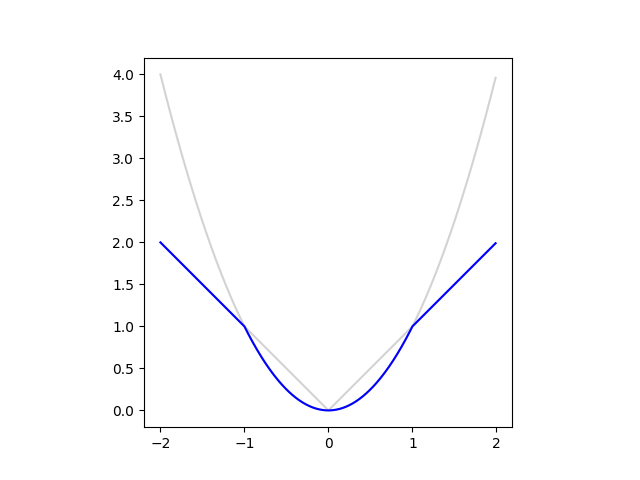

Table of Contents
Introduction
This is the second of a series of blog posts that will describe my project
of implementing reinforcement learning of Atari games using TensorFlow and OpenAI Gym. In Part 1 of this series we focused on simple_dqn, which implements a simplest deep Q-network. Here we build a deeper Q-network with enhanced training by introducing target Q-network and error clipping,
by closely following the construction in [2]. As in Part 1, I will go into some implementation details I gathered while implementing the deep Q-network.
Architecture
The architecture of the Q-network of [2] is not much different from that of [1], it is just deeper and has more weights:
- First it takes a tensor of dimension [84, 84, 4] as an input, which is a stack of four grayscale images preprocessed from the screen captured from the Atari emulator.
- The next layer is a 2d convolution layer, with a filter of dimension [height, width, in, out] = [8, 8, 4, 32] and a stride of 4, followed by a ReLU layer. The resulting tensor is of dimension [20, 20, 32].
- Then there is another 2d convolution layer, with a filter of dimension [4, 4, 32, 64] and a stride of 2, followed by a ReLU layer. The output of this layer is of dimension [9, 9, 64].
- The last 2d convolution layer has a filter of dimension [3, 3, 64, 64] and a stride of 1, followed by a ReLU layer. The output of this layer is of dimension [7, 7, 64].
- The previous output is flattened and used as an input for the first fully connected layer followed by a ReLU layer, whose output is of dimension [512].
- The last layer is another fully connected layer without any nonlinear unit, and the output has the same dimension as the number of actions.
This is shown in the following TensorFlow graph obtained using Tensorboard.
Then there is a target Q-network, which is a clone of the Q-network and is updated by copying the weights of the Q-network using tf.assign ops under update namespace. The training is again similar to that of [1], which is done using tf.train.RMSPropOptimizer under train namespace, except error clipping is used when calculating the loss.
Implementation
Error clipping
The error clipping of [2] corresponds to using the following loss function:
An easy way to implement this loss function is using tf.minimum:
class AtariDQNAgent:
# ...
def _build_train_ops(self):
# ...
diffs = ys - Qs_of_action
if self._config['clip_error']:
print('Use error clipping...')
deltas = tf.minimum(
tf.square(diffs),
tf.abs(diffs),
name='clipped_deltas',
)
# ...
Getting TensorFlow ops/tensors by name
Compared to simple_dqn, here we use TensorFlow's namespace more extensibly, both for clear separation among various functionalities and also for the ease of retrieving various ops and tensors defined in the TensorFlow graph without using arbitrary variables.
For that purpose, first we need to distingush ops and tensors in TensorFlow. A TensorFlow op, or operation, takes input tensors and returns output tensors. And the name of an output tensor is defined as 'operation name' + ':' + 'index in output tensor list'. For example, in the following snippet,
with tf.variable_scope('train'):
# ...
loss = tf.reduce_mean(deltas, name='loss')
# ...
A TensorFlow op tf.reduce_mean is defined with name train/loss, takes a tensor referenced by variable deltas, and gives an output tensor named train/loss:0. Ops and tensors can be retrieved using tf.Graph.get_operation_by_name and tf.Graph.get_tensor_by_name, respectively, as illustrated in the following snippet.
class AtariDQNAgent:
# ...
def _get_tf_op(self, name):
return self._tf_graph.get_operation_by_name(name)
def _get_tf_t(self, name):
return self._tf_graph.get_tensor_by_name(name)
# ...
def _optimize_Q(self):
# ...
fetches = [
self._get_tf_op('train/minimize_loss'),
self._get_tf_t('train/loss:0'),
self._get_tf_t('summary/train/loss:0'),
]
# ...
Measuring GPU memory usage
In Visualizing Convolutional Network - GPU memory usage, we discussed how to obtain the GPU memory usage using a custom op. From TensorFlow 1.1, we have a TensorFlow op tf.contrib.memory_stats.MaxBytesInUse() that can be used in similar way but without building a custom op. We can use the op in the following way:
import tensorflow as tf
with agent._tf_graph.as_default():
memory_used = agent._tf_session.run(
tf.contrib.memory_stats.MaxBytesInUse()
)
>>> memory_used / 1024 ** 2
604.752685546875
So it tells us that about 605 MB of GPU memory is being used. However, this does not count all the GPU memory used by the TensorFlow process, for example when compared to the output of nvidia-smi command line utility as shown in the following:
$ nvidia-smi --query-compute-apps=pid,process_name,used_memory --format=csv,nounits
pid, process_name, used_gpu_memory [MiB]
18428, /home/chan/venv/bin/python3.6, 1243
This is more than two times of the memory usage returned by tf.contrib.memory_stats.MaxBytesInUse(), and this is what actually matters to run the process.
There are a few utilites like gpustat that fully parses the output of nvidia-smi, but we just need to obtain a small amount of result and because usually Python's subprocess calls are expensive, here we just implement a small code to get the used GPU memory by PID as defined in get_used_gpu_memory
NVIDIA_SMI_ARGS = [
'nvidia-smi',
'--query-compute-apps=pid,used_memory',
'--format=csv,noheader',
]
class AtariDQNAgent:
# ...
def get_used_gpu_memory(self):
# ...
smi_outputs = subprocess.check_output(
NVIDIA_SMI_ARGS,
universal_newlines=True,
).splitlines()
# ...
GPU memory management
By default a TensorFlow process allocates as much GPU memory as possible to itself, which prevents another TensorFlow process from running at the same time. To stop a TensorFlow process from using all GPU memory, we can
- let TensorFlow allocates as small amount of memory as possible to a process and then let its GPU memory usage grow as the process runs, and
- specify the maximum amount of GPU memory the process can use
by using options in tf.ConfigProto() in the following way:
tf_config = tf.ConfigProto()
tf_config.gpu_options.allow_growth = gpu_memory_allow_growth
if gpu_memory_fraction is not None:
tf_config.gpu_options.per_process_gpu_memory_fraction = (
gpu_memory_fraction
)
self._tf_session = tf.Session(config=tf_config)
API
To train an agent, run
from dqn import AtariDQNAgent
from configs import dqn_nature_configuration
agent = AtariDQNAgent(
game_name='Breakout-v0',
config=dqn_nature_configuration,
)
stats = agent.train(
max_num_of_steps=(10 ** 6),
run_name='nature_config',
)
which saves checkpoints as checkpoints\nature_config*, logs for TensorBoard at logs\nature_config\, and the configuration as runs\nature_config JSON file. Then we can resume the training using the last checkpoint as
agent = AtariDQNAgent(
game_name='Breakout-v0',
config=dqn_nature_configuration,
)
stats = agent.train(
max_num_of_steps=2 * (10 ** 6),
run_name='nature_config_2',
save_path='checkpoints/nature_config-1000000'
)
although it only imports weights for the Q-networks so it takes some time to fill up the replay memory. After the training, we can let the agent play games, with higher \(\epsilon\) (0.05 when playing vs. minimum 0.1 when training) of the \(\epsilon\)-greedy policy.
agent = AtariDQNAgent(
game_name='Breakout-v0',
config=dqn_nature_configuration,
)
stats = agent.play(
max_num_of_episodes=1,
save_path='checkpoints/nature_config-2000000'
)
after which it outputs a GIF animation as play-Breakout-v0.gif.
Training
Here we perform a few experiments to see how target Q-network and error clipping affect training of the Q-network.
Using target Q-network and error clipping
We first compare the training of the NIPS architecture with and without target Q-network.
We can see that introducing a target Q-network stabilizes the training from the plot of average Q values, where we have far less oscillation of Q values when we use a target Q-network, espeically during the initial stage of the training. However, we cannot see any gain both from the Q value plot and the reward value plot, and this is probably because the NIPS architecture is not deep enough to benefit from the introduction of a Q-network during training.
Now let's see the result of a similar experiment, this time the training of the Nature architecture with target Q-network but without error clipping, with error clipping but without target Q-network, and without both of them.

Now we see that the introduction of target Q-networks makes or breaks the training. Without using target Q-network, the deeper Q-network is not trained properly. Introduction of error clipping also makes a big difference in terms of average Q values, as it rapidly stabilizes the initial divergence in Q estimation, probably thanks to using a linear loss when the value of loss is larger than 1 and therefore having less divergent value compared to the squared error. But its effect is not as dramatic as using a target Q-network, which is more evident when we see the average reward plot and also the following plot where the result of without both target Q-network and error clipping is removed and the result of both of them being used, i.e. the exact training algorithm used in [2], is plotted.
We can see that using a target Q-network alone is quite enough without using error clipping, as we see little difference between using it or not as long as we use a target Q-network. This makes me guess that the authors of [2] probably first tried to stabilize the wild behaviour of the Nature architecture during training using error clipping only, and after that they may have discovered that using a target Q-network is more beneficial but left error clipping there to be safe.
Increasing the size of minibatch
When training the Nature deep Q-network, the GPU usage was below 40%, and I wondered if GPU can be fully utilized by using a larger minibatch, as well as improving the training in the sense that it effectively undergoes more weight updates.
Of course the fundamental reason for the less-than-optimal usage of the GPU is because it takes quite much time to sample and fill up a minibatch from the replay memory, as this is done on the CPU side. If I had a GPU with more memory than I can try pushing all the data to GPU but that was not an option for me.
Then the second best solution would be maintaining a separate thread for a queue to which the CPU puts in minibatches and the GPU consumes it as fast as possible. But this requires quite a work so I postponed it to a future project.
Compared to the above, changing the size of the minibatch is very simple, so I tried doubling the size from 32 to 64, whose result is shown in the following plot.
As we can see, doubling the minibatch size did not help the training. In retrospect, even if we increase the size of a minibatch, the number of weight updates will be the same, because we sum all the erros to get a scalar loss, and that may be the reason why changing the size of a minibatch does not give a noticeable difference in training. It would be interesing to do more experiment on this matter, but I think introducing a training queue will be far more productive effort, so I won't pursue the tuning of the minibatch size.
The plot also shows the result after 5M weight updates. Compared to the steep increase of reward values between 1M and 2M steps, the reward plot somewhat plateaus after 2M. The average Q-value plot shows the training is still linearly progressing so the training itself is going on smoothly, but I will first revisit the code to improve the efficiency of the training and then try training it for 10M and 50M updates to compare the results with those of [2] on equal footing.

Comments
comments powered by Disqus